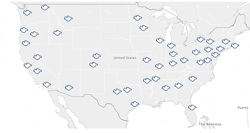
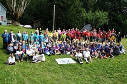

Dear Friends,
A few days ago, I wrote you to outline the Fellowship of Reconciliation's plan this year to embrace a U.S.-based strategy for nonviolent social change. Many of you have already responded to that message, offering affirmations, hopes, and questions. Today I will address some of your initial queries.
Why is FOR making this shift?
Through several months of investigation, analysis, and discernment, the call to focus attention to our national network and grassroots organizing was clear. [Read my March 15 message for more details.]
What will be the priorities of FOR staff in the regional organizing model?
To pursue demilitarization and address cultures of violence through the transformative power of nonviolence, organizing staff will focus on:
- Reinvigorating or starting new chapters and affiliates
- Living out the call to organize, train, and grow a diverse movement
- Introducing new persons and groups to the FOR network
- Connecting constituencies through gatherings, social media, and other vehicles
- Offering trainings in person and through webinars
- Providing resources to support campaigns and initiatives
How does FOR's new model leverage our strengths?
For all of the United States' challenges as a nation, the determination to pursue freedom, equality, justice, and democracy constitutes a strength of its people. For a century, FOR members have called on our fellow citizens to stand up for these principles, making the ideal the real.
To wit:
- Though we struggle with Islamophobia, anti-semitism, and religious extremism of every sort, freedom of religion remains a dearly held value in the United States. By drawing on spiritual wisdom and practice in our pursuit of peace, we leverage our strength to further transformation.
- Though we struggle with racism, sexism, and heterosexism, the legacy of nonviolent activism to bring change in these areas has garnered progress.
- Though we are considered one of the most militaristic and violent nations on earth, the peace movement and the embrace of nonviolent methods continue to gain momentum.
Some of the most inspiring examples of the best we can be as a national community are connected to FOR members and initiatives. Our existing network across the 50 states is doing tremendous work for transformation; we want to lift this up and build on it.
What does this mean for international work?
 FOR-USA will continue to be very involved in working for peace globally. Instead of having staff and offices located outside the United States, we will work through the International Fellowship of Reconciliation (IFOR) to support indigenous leadership and campaigns for peace and justice in other countries. We are one of the most active branches of IFOR and will continue to lend strength to the functioning of that body. FOR-USA will continue to be very involved in working for peace globally. Instead of having staff and offices located outside the United States, we will work through the International Fellowship of Reconciliation (IFOR) to support indigenous leadership and campaigns for peace and justice in other countries. We are one of the most active branches of IFOR and will continue to lend strength to the functioning of that body.
FOR-USA has worked internationally based on guidance and requests from partners and hosts. FOR is sensitive to the history of colonialism and the export of American hegemony; this model supports the desires, campaigns, and initiatives for peace and justice of citizens abroad while not dictating agenda or priority. We are very proud of the legacy of peace that our work abroad has wrought. Though we will no longer employ teams or staff in Latin America or the Middle East, we are still very much aware of our interconnectedness and the need for peace in all places on the earth. We commit to working with our local chapters, affiliates, and partner institutions to address U.S. militarization beyond our national borders.
What about the accompaniment program in Colombia?
FOR is working with staff in Colombia and the Peace Community of San José de Apartadó to support the formation of a new member of the FOR family: FOR Peace Presence (FOR-PP). This exciting new FOR branch represents a new model in the International FOR movement as it is a branch based on a methodology for social change rather than a national identity. FOR-PP’s primary identity is based on the method of accompaniment. Currently, the work of FOR-PP will continue in Colombia. When a peace presence of accompaniment is no longer needed in Colombia, FOR-PP will relocate where its presence is needed.
Furthermore, FOR-PP has a transnational identity as it enjoys collaboration and primary support from FOR-USA, FOR Austria, the SERPAJ Latin America network, as well as indigenous leadership in Colombia. FOR-USA is excited to see the evolution of an initiative that we have long nurtured and supported. In today’s environment where national borders are more permeable and transnationality is more common, this model is on the cutting edge of our international movement.
Will there still be delegations?
For the forseeable future, FOR will not be sponsoring international delegations. We will work with our partners, particularly Interfaith Peace-Builders (originally a FOR-USA program, spun off as a separate entity in 2006) to support and participate in delegations. When there is a pressing need and finances allow, FOR may sponsor a delegation in the future.
How can I get involved?
FOR has set the ambitious goal of 10 new or reactivated chapters and 500 new members by our 100th anniversary dinner in New York City in November 2015.
- If you are not part of a chapter, contact us to begin a conversation about connecting with activists and peacemakers in your area or around your interests.
- Share this article with others who would be interested in connecting with FOR.
- Inform us of the work you are doing either through the FOR organizer in your region or our communications department.
- Let us know what resources you need to be more effective and productive.
- Give to FOR; financial gifts are always needed and greatly appreciated.
- Pray for FOR or offer hope for FOR’s vision in your meditation practice.
- Believe in the coming reality of a transformed society and the beloved community.
Grace and peace,
 Rev. Kristin Stoneking Rev. Kristin Stoneking
Executive Director
Fellowship of Reconciliation
|